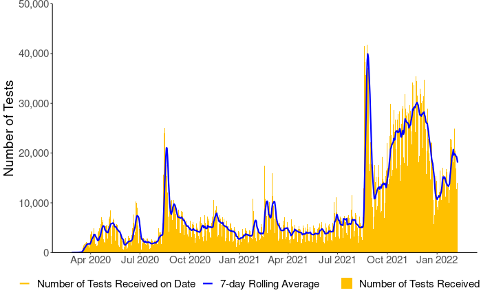

Information on lab testing and capacity and testing rates by ethnicity and DHB.
Last updated 1pm 9 February 2022.
All data on this page relates to tests processed prior to 11:59 pm 8 February 2022.
Testing data is collected from the Eclair database (administered by ESR) unless otherwise stated.
On this page:
- Testing summary, status, and results
- Testing over the past 4 weeks
- Testing rate and results by location and ethnicity
- Testing rate and results by age and sex
See also:
Testing summary, status, and results
| People tested | Test results delivered in past 24 hours | Test results delivered during past week |
|---|---|---|
| People who travelled internationally | 1,166 | 9,713 |
| People working at the border, in managed facilities, or near people travelling internationally | 953 | 6,897 |
| Within New Zealand, not linked to the border | 13,853 | 109,973 |
| Other | 0 | 0 |
| Total | 15,972 | 126,583 |
| Total | |
|---|---|
| All COVID-19 viral tests administered* | 6,198,536 |
| Testing kits in stock (updated weekdays only) | 1,249,388 |
* Covers the period from the first COVID-19 test in New Zealand on 22 January 2020 (first test in New Zealand) to 9 February 2022. Note that some people are tested more than once and a positive case can result in more than one positive test.
| Test results | In managed facilities | Within NZ communities | Total |
|---|---|---|---|
| Tested positive for COVID-19 | 4,073 | 18,817 | 22,890 |
| Tested negative (no COVID-19) | 486,481 | 5,687,052 | 6,173,533 |
| Inconclusive result for COVID-19 | 57 | 2,056 | 2,113 |
| Total (all tests) | 490,611 | 5,707,925 | 6,198,536 |

Testing over the past 4 weeks
| DHB of Patient Domicile | 10 Jan to 16 Jan | 17 Jan to 23 Jan | 24 Jan to 30 Jan | 31 Jan to 6 Feb |
|---|---|---|---|---|
| Managed isolation and quarantine facilities | 7,336 | 10,450 | 10,658 | 10,599 |
| Auckland | 17,497 | 15,574 | 21,477 | 19,712 |
| Bay of Plenty | 4,691 | 2,426 | 3,868 | 5,270 |
| Canterbury | 6,693 | 5,233 | 8,694 | 7,481 |
| Capital and Coast | 4,775 | 3,175 | 5,134 | 5,790 |
| Counties Manukau | 19,490 | 19,422 | 27,729 | 27,744 |
| Hawkes Bay | 1,593 | 1,963 | 2,989 | 3,989 |
| Hutt Valley | 1,700 | 1,129 | 1,736 | 1,853 |
| Lakes | 2,496 | 2,659 | 3,836 | 2,840 |
| MidCentral | 2,218 | 2,266 | 3,273 | 2,687 |
| Nelson Marlborough | 1,172 | 1,531 | 2,760 | 2,132 |
| Northland | 2,604 | 2,395 | 4,494 | 4,570 |
| South Canterbury | 430 | 276 | 552 | 556 |
| Southern | 2,707 | 2,062 | 3,681 | 3,540 |
| Tairawhiti | 424 | 364 | 1,071 | 1,223 |
| Taranaki | 1,413 | 1,223 | 1,828 | 1,688 |
| Waikato | 7,642 | 5,043 | 8,961 | 11,237 |
| Wairarapa | 455 | 356 | 409 | 461 |
| Waitemata | 17,515 | 16,634 | 24,938 | 20,247 |
| West Coast | 150 | 143 | 210 | 160 |
| Whanganui | 634 | 553 | 824 | 751 |
| Unknown | 412 | 373 | 389 | 333 |
| Total | 104,047 | 95,250 | 139,511 | 134,863 |
Note: some people are tested more than once. We cannot give you detailed information about tests in your district, city or town, as we must protect the privacy of the people concerned.
| Ethnicity | 10 Jan to 16 Jan | 17 Jan to 23 Jan | 24 Jan to 30 Jan | 31 Jan to 6 Feb |
|---|---|---|---|---|
| Māori | 14,634 | 14,187 | 20,958 | 19,506 |
| Pacific peoples | 10,621 | 10,414 | 13,518 | 15,544 |
| Asian | 17,977 | 17,768 | 24,460 | 24,500 |
| European/other | 56,714 | 48,854 | 76,448 | 71,115 |
| Unknown | 4,101 | 4,027 | 4,127 | 4,198 |
| Total | 104,047 | 95,250 | 139,511 | 134,863 |
| COVID-19 test result | 10 Jan to 16 Jan | 17 Jan to 23 Jan | 24 Jan to 30 Jan | 31 Jan to 6 Feb |
|---|---|---|---|---|
| Tested positive | 251 | 431 | 554 | 495 |
| Tested negative (no COVID-19) | 7,083 | 10,014 | 10,076 | 10,104 |
| Inconclusive result | 2 | 5 | 28 | 0 |
| Total | 7,336 | 10,450 | 10,658 | 10,599 |
| COVID-19 test result | 10 Jan to 16 Jan | 17 Jan to 23 Jan | 24 Jan to 30 Jan | 31 Jan to 6 Feb |
|---|---|---|---|---|
| Tested positive | 526 | 678 | 1,182 | 1,932 |
| Tested negative (no COVID-19) | 103,338 | 94,548 | 138,275 | 132,907 |
| Inconclusive result | 183 | 24 | 54 | 24 |
| Total | 104,047 | 95,250 | 139,511 | 134,863 |
Testing rate and results by location and ethnicity
| Location | Total tests | Tested positive (%) | Test rate per 1000 people |
|---|---|---|---|
| Managed isolation and quarantine facilities | 490,611 | 0.83% | NA |
| Auckland | 930,344 | 0.35% | 1,890.6 |
| Bay of Plenty | 217,279 | 0.31% | 838.4 |
| Canterbury | 397,922 | 0.09% | 702.8 |
| Capital and Coast | 246,019 | 0.09% | 780.4 |
| Counties Manukau | 1,240,908 | 0.57% | 2,094.6 |
| Hawkes Bay | 99,968 | 0.13% | 572.9 |
| Hutt Valley | 84,165 | 0.09% | 541.5 |
| Lakes | 104,915 | 0.30% | 916.8 |
| MidCentral | 96,089 | 0.07% | 528.6 |
| Nelson Marlborough | 95,594 | 0.14% | 606.8 |
| Northland | 207,946 | 0.22% | 1,074.9 |
| South Canterbury | 26,218 | 0.14% | 428.3 |
| Southern | 182,222 | 0.16% | 543.5 |
| Tairawhiti | 24,916 | 0.17% | 484.4 |
| Taranaki | 82,086 | 0.13% | 666.9 |
| Waikato | 479,341 | 0.31% | 1,114.0 |
| Wairarapa | 23,952 | 0.09% | 492.7 |
| Waitemata | 1,052,648 | 0.35% | 1,673.1 |
| West Coast | 8,194 | 0.05% | 253.3 |
| Whanganui | 24,545 | 0.06% | 359.7 |
| Unknown | 82,654 | 0.44% | NA |
| Total | 6,198,536 | 0.37% | 1,239.6 |
| Ethnicity* | Total test | Tested positive (%) | Test rate per 1000 people |
|---|---|---|---|
| Māori | 899,162 | 0.74% | 1,172.8 |
| Pacific peoples | 723,195 | 0.69% | 1,965.7 |
| Asian | 1,037,341 | 0.35% | 1,411.9 |
| European/other | 3,284,242 | 0.19% | 1,056.6 |
| Unknown | 254,596 | 0.56% | NA |
| Total | 6,198,536 | 0.37% | 1,239.6 |
* The prioritised ethnicity classification system is used in this table and below. This means each person is allocated to a single ethnic group, based on the ethnic groups they identify with. Where people identify with more than one group, they are assigned in this order of priority: Māori, Pacific Peoples, Asian, and European/Other. So, if a person identifies as being Māori and New Zealand European, the person is counted as Māori. See Ngā tapuae me ngā raraunga: Methods and data sources for further information.
The data categorized by ethnicity come from National Health Index (NHI) data collection, linked to data held in the EpiSurv database.
| Location | Māori | Pacific peoples | Asian | European/Other |
|---|---|---|---|---|
| Auckland | 2,274.5 | 2,118.1 | 1,619.2 | 1,848.5 |
| Bay of Plenty | 869.5 | 1,513.0 | 975.1 | 789.6 |
| Canterbury | 707.4 | 752.3 | 737.1 | 671.9 |
| Capital and Coast | 781.3 | 795.0 | 683.9 | 786.1 |
| Counties Manukau | 2,361.4 | 2,458.8 | 1,722.3 | 1,980.6 |
| Hawkes Bay | 533.6 | 1,115.8 | 638.5 | 540.5 |
| Hutt Valley | 562.2 | 649.6 | 479.0 | 531.5 |
| Lakes | 973.5 | 1,136.3 | 1,402.3 | 806.8 |
| MidCentral | 584.5 | 643.5 | 480.4 | 505.7 |
| Nelson Marlborough | 635.0 | 1,599.9 | 608.5 | 570.5 |
| Northland | 1,064.9 | 1,282.3 | 1,039.9 | 1,067.6 |
| South Canterbury | 509.1 | 648.3 | 475.1 | 402.6 |
| Southern | 539.7 | 729.7 | 610.4 | 525.3 |
| Tairawhiti | 488.4 | 701.6 | 715.6 | 442.9 |
| Taranaki | 682.3 | 835.0 | 950.5 | 635.2 |
| Waikato | 1,227.8 | 1,337.0 | 1,162.3 | 1,052.7 |
| Wairarapa | 531.8 | 631.0 | 536.6 | 472.7 |
| Waitemata | 2,031.8 | 2,069.7 | 1,299.6 | 1,712.9 |
| West Coast | 254.1 | 315.2 | 336.4 | 245.6 |
| Whanganui | 322.8 | 400.4 | 437.2 | 362.6 |
Note: some people are tested more than once. We cannot give you detailed information about tests in your district, city or town, as we must protect the privacy of the people concerned.
| Location | Māori | Pacific peoples | Asian | European/Other |
|---|---|---|---|---|
| Auckland | 1.05% | 0.80% | 0.19% | 0.17% |
| Bay of Plenty | 0.42% | 0.14% | 0.71% | 0.22% |
| Canterbury | 0.15% | 0.18% | 0.08% | 0.06% |
| Capital and Coast | 0.06% | 0.15% | 0.07% | 0.09% |
| Counties Manukau | 1.30% | 0.76% | 0.34% | 0.17% |
| Hawkes Bay | 0.15% | 0.37% | 0.41% | 0.07% |
| Hutt Valley | 0.14% | 0.02% | 0.18% | 0.06% |
| Lakes | 0.51% | 0.09% | 0.37% | 0.14% |
| MidCentral | 0.07% | 0.05% | 0.11% | 0.07% |
| Nelson Marlborough | 0.25% | 0.02% | 0.49% | 0.11% |
| Northland | 0.36% | 0.34% | 0.04% | 0.14% |
| South Canterbury | 0.12% | 0.00% | 0.28% | 0.14% |
| Southern | 0.16% | 0.07% | 0.16% | 0.13% |
| Tairawhiti | 0.23% | 0.60% | 0.10% | 0.08% |
| Taranaki | 0.28% | 0.21% | 0.18% | 0.08% |
| Waikato | 0.58% | 0.38% | 0.56% | 0.15% |
| Wairarapa | 0.20% | 0.00% | 0.00% | 0.07% |
| Waitemata | 1.19% | 0.70% | 0.15% | 0.21% |
| West Coast | 0.00% | 0.00% | 0.00% | 0.06% |
| Whanganui | 0.05% | 0.00% | 0.29% | 0.05% |
Note: we cannot give the total number of people testing positive per DHB and ethnicity for privacy reasons.
Testing rate and results by age and sex
| Age group | Total people tested | Tested positive (%) | Test rate per 1000 people |
|---|---|---|---|
| 0 to 9 | 347,706 | 0.96% | 532.3 |
| 10 to 19 | 508,079 | 0.65% | 793.1 |
| 20 to 29 | 1,211,622 | 0.38% | 1,797.1 |
| 30 to 39 | 1,230,693 | 0.37% | 1,786.0 |
| 40 to 49 | 951,374 | 0.30% | 1,516.3 |
| 50 to 59 | 939,508 | 0.25% | 1,468.5 |
| 60 to 69 | 639,343 | 0.19% | 1,195.6 |
| 70 to 79 | 255,698 | 0.18% | 714.0 |
| 80+ | 113,473 | 0.16% | 619.0 |
| Unknown | 1,040 | 4.52% | NA |
| Total | 6,198,536 | 0.37% | 1,239.6 |
| Sex | Total people tested | Tested positive (%) | Test rate per 1000 people |
|---|---|---|---|
| Female | 3,046,916 | 0.36% | 1,194.9 |
| Male | 3,064,062 | 0.37% | 1,251.4 |
| Unknown | 87,558 | 0.40% | NA |
| Total | 6,198,536 | 0.37% | 1,239.6 |
Note: On 4 January 2022, the Ministry of Health started reporting testing rates using the Ministry's HSU population estimate.